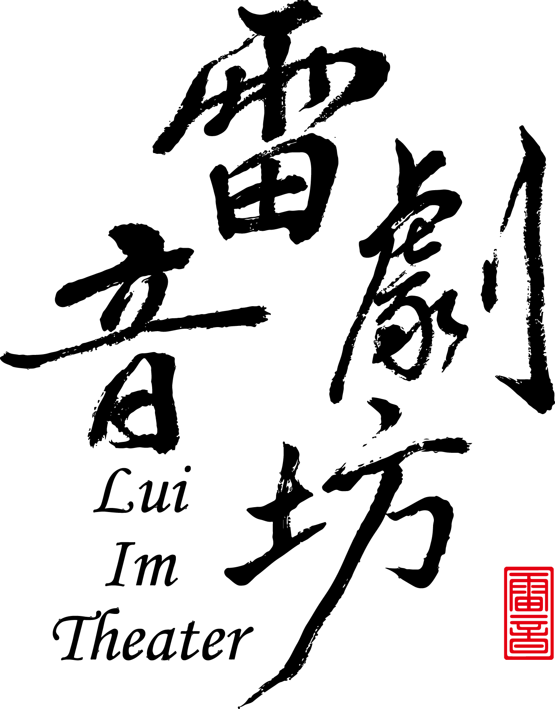

Lui Im Theater · Taiwan
掌中有戲
雷音有聲
以台灣在地故事為題材、台語原創為核心精神，融合歌仔調音樂，讓傳統掌中戲持續在當代舞台發聲。
Schedule
近期動向
演出、工作坊與交流活動集中在這裡。粉絲不用翻貼文，就能直接掌握雷音接下來在哪裡。
讀取近期行程…
About
關於雷音
雷音劇坊創立於 2020 年，以推廣、傳承台灣布袋戲為宗旨。劇坊創作以台灣在地故事為題材、台語原創為核心精神，融合歌仔調音樂為主要特色，展現地方文化底蘊與當代創意。
團員持續透過舞台實踐精進操偶、口白與樂器演奏，同時鑽研偶頭雕刻彩繪、服飾、盔帽及道具製作等工藝，並投入校園與教育推廣，讓傳統藝術持續向下扎根。
「雷」相傳為戲曲祖師田都元帥之姓；「音」則呼應戲曲後場音樂。劇團以「雷音」為名，既感念祖師，也期許戲聲如雷、傳得更遠。
2024
新北市傑出演藝團隊
2022
金掌獎評審團特別獎
2021
金掌獎入圍
2021
青年金掌獎入圍

Behind the scenes
台前一刻
台後千工
戲台前看到的是幾十分鐘的演出；戲台後，是演師、樂師、技術與戲偶同時運轉的另一個世界。


Productions
作品
從傳統戲棚到當代劇場，作品頁將逐步整理劇情、製作團隊、演出紀錄、劇照與影片。

Featured production
《青瞑龍》
第一批作品資料將由這裡開始建立，之後每齣作品都可以擁有獨立介紹與演出紀錄。
People
一起讓戲
活起來的人
演師、演員、樂師、劇作與行政，共同構成雷音劇坊的創作與演出現場。